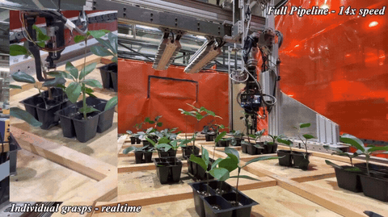
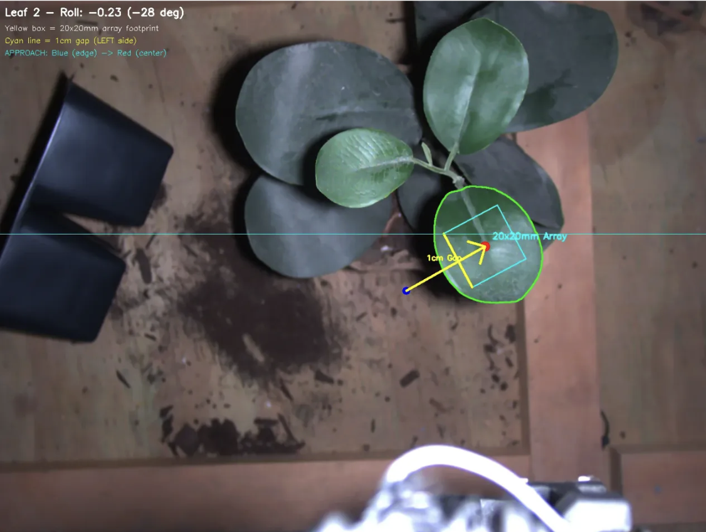

Research · Manipulation · Perception
Autonomous Plant Sampling
Built vision-guided autonomous leaf sampling for plant-disease detection: zero-shot leaf segmentation with SAM + RAFT-Stereo, grasp planning, and synchronized 6-axis gantry control. The system reached 95.8% autonomous sampling success and 97% leaf detection accuracy.
Primary-author publication · 2026




↔ media: system run · grasping · gantry · grasp planning